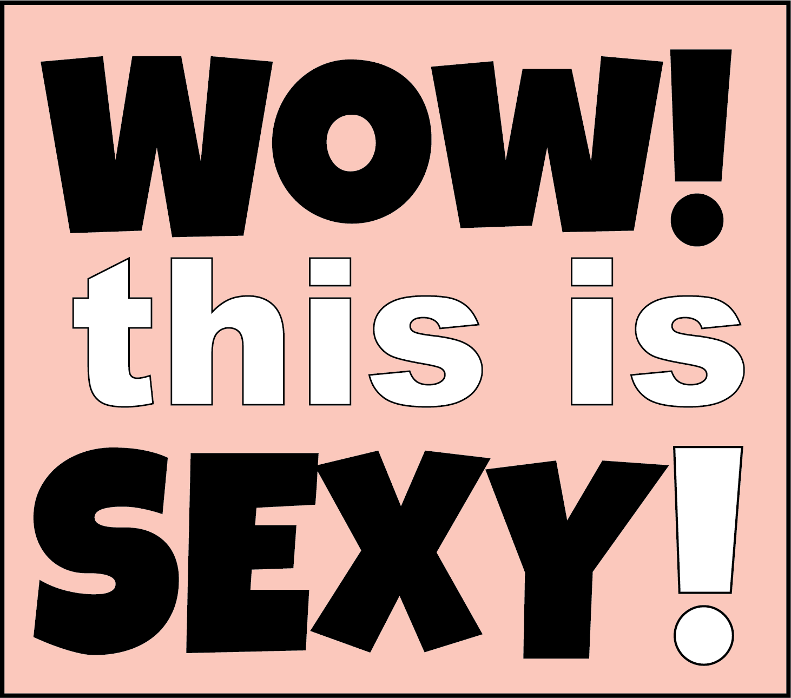
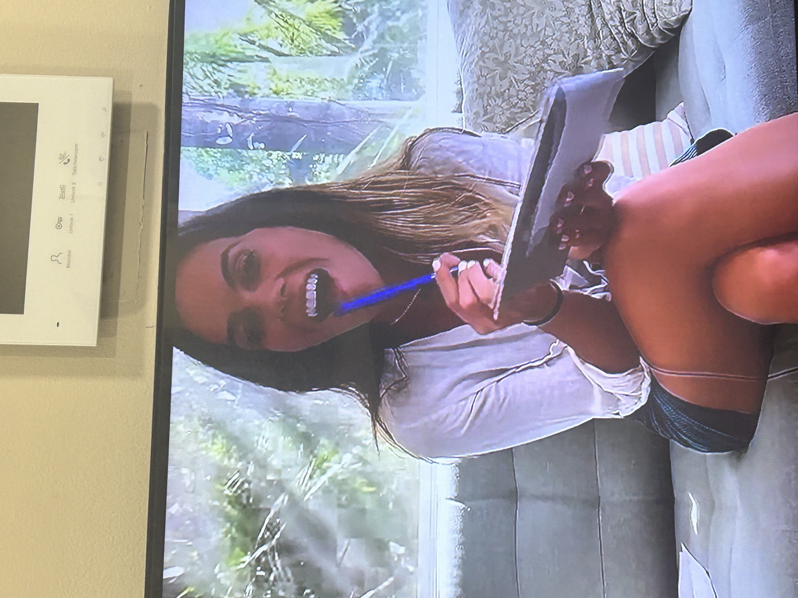
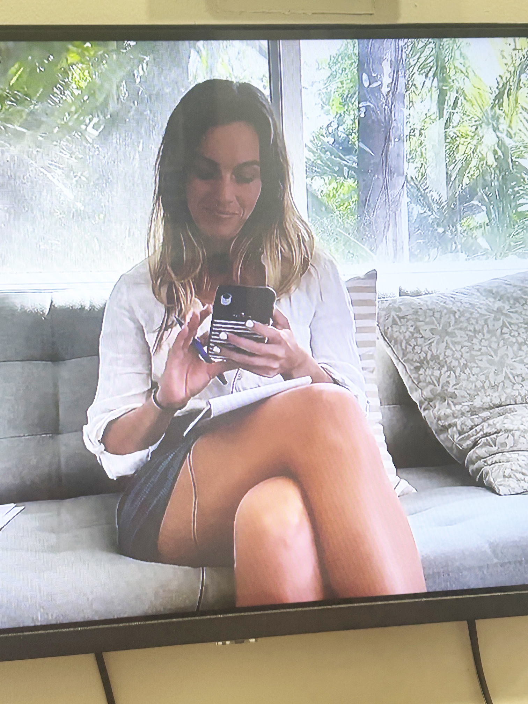

ASMR stands for Autonomous Sensory Meridian Response. Viewers often describe the sensation as a "brain massage". ASMR creators on YouTube (often called "ASMRtists") use highly sensitive microphones and specific triggers to induce this feeling. Whispering, Tapping and Scratching, Personal Attention: (like Role-playing) and Crisp Sounds are used a lot for a great viewing experience.
While the intensity and experience vary from person to person, ASMR is primarily used as a relaxation and wellness tool. Users frequently watch or listen to ASMR videos to: Fall asleep faster; Reduce stress and anxiety; Calm their mood or alleviate minor aches.
MS. BELL FLIRTS WITH A PARENT HERE (V1): She is a teacher who wants the best for her students, and the students dad most of all, lol 😉 College is coming and she offers her services to make the grade for all!